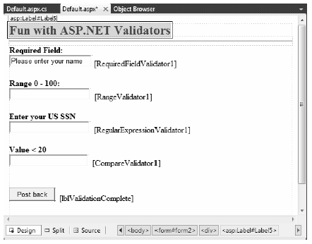
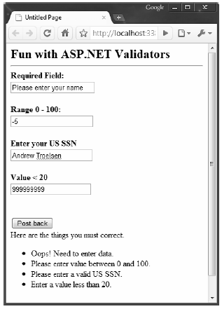
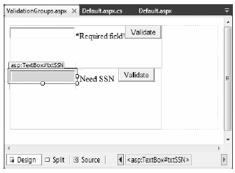

The next set of Web Form controls we will examine are known collectively as validation controls. Unlike the other Web Form controls we’ve examined, validation controls are not used to emit HTML for rendering purposes, but are used to emit client-side JavaScript (and possibly related server-side code) for the purpose of form validation. As illustrated at the beginning of this chapter, client-side form validation is quite useful because you can ensure that various constraints are in place before posting back to the web server, thereby avoiding expensive round-trips. Table 33-3 gives a rundown of the ASP.NET validation controls.
Table 33-3. ASP.NET Validation Controls
| Control | Meaning in Life |
|---|---|
| CompareValidator | Validates that the value of an input control is equal to a given value of another input control or a fixed constant. |
| CustomValidator | Allows you to build a custom validation function that validates a given control. |
| RangeValidator | Determines that a given value is in a predetermined range. |
| RegularExpressionValidator | Checks whether the value of the associated input control matches the pattern of a regular expression. |
| RequiredFieldValidator | Ensures that a given input control contains a value (i.e., is not empty). |
| ValidationSummary | Displays a summary of all validation errors of a page in a list, bulleted list, or single-paragraph format. The errors can be displayed inline and/or in a pop-up message box. |
All of the validation controls ultimately derive from a common base class named System.Web.UI.WebControls.BaseValidator, and therefore they have a set of common features. Table 33- 4 documents the key members.
Table 33-4. Common Properties of the ASP.NET Validators
| Member | Meaning in Life |
|---|---|
| ControlToValidate | Gets or sets the input control to validate. |
| Display | Gets or sets the display behavior of the error message in a validation control. |
| EnableClientScript | Gets or sets a value indicating whether client-side validation is enabled. |
| ErrorMessage | Gets or sets the text for the error message. |
| ForeColor | Gets or sets the color of the message displayed when validation fails. |
To illustrate working with these validation controls, create a new Empty Web Site project named ValidatorCtrls and insert a new Web Form named Default.aspx. To begin, place four (well-named) TextBox controls (with four corresponding and descriptive Labels) onto your page. Next, place a RequiredFieldValidator, RangeValidator, RegularExpressionValidator, and CompareValidator type adjacent to each respective input field. Last of all, add a single Button and final Label (see Figure 33-19).
Figure 33-19 ASP.NET validation controls will ensure your form data is correct before allowing postback
Now that you have an initial UI, let’s walk through the process of configuring each validator.
Configuring the RequiredFieldValidator is straightforward. Simply set the ErrorMessage and ControlToValidate properties accordingly using the Visual Studio 2010 Properties window. Here is the resulting markup that ensures the txtRequiredField text box is not empty:
<asp:RequiredFieldValidator ID="RequiredFieldValidator1" runat="server" ControlToValidate="txtRequiredField" ErrorMessage="Oops! Need to enter data."> </asp:RequiredFieldValidator>
The RequiredFieldValidator supports an InitialValue property. You can use this property to ensure that the user enters any value other than the initial value in the related TextBox. For example, when the user first posts to a page, you may wish to configure a TextBox to contain the value “Please enter your name”. Now, if you did not set the InitialValue property of the RequiredFieldValidator, the runtime would assume that the string “Please enter your name” is valid. Thus, to ensure a required TextBox is valid only when the user enters anything other than “Please enter your name”, configure your widgets as follows:
<asp:RequiredFieldValidator ID="RequiredFieldValidator1" runat="server" ControlToValidate="txtRequiredField" ErrorMessage="Oops! Need to enter data." InitialValue="Please enter your name"> </asp:RequiredFieldValidator>
The RegularExpressionValidator can be used when you wish to apply a pattern against the characters entered within a given input field. To ensure that a given TextBox contains a valid US Social Security number, you could define the widget as follows:
<asp:RegularExpressionValidator ID="RegularExpressionValidator1" runat="server" ControlToValidate="txtRegExp" ErrorMessage="Please enter a valid US SSN." ValidationExpression="\d{3}-\d{2}-\d{4}"> </asp:RegularExpressionValidator>
Notice how the RegularExpressionValidator defines a ValidationExpression property. If you have never worked with regular expressions before, all you need to be aware of for this example is that they are used to match a given string pattern. Here, the expression "\d{3}-\d{2}-\d{4}" is capturing a standard US Social Security number of the form xxx-xx-xxxx (where x is any digit).
This particular regular expression is fairly self-explanatory; however, assume you wish to test for a valid Japanese phone number. The correct expression now becomes much more complex: "(0\d{1,4}- |\(0\d{1,4}\)?)?\d{1,4}-\d{4}". The good news is that when you select the ValidationExpression property using the Properties window, you can pick from a predefined set of common regular expressions by clicking the ellipse button.
Note If you are interested in regular expressions, you will be happy to know that the .NET platform supplies two namespaces (System.Text.RegularExpressions and System.Web.RegularExpressions) devoted to the programmatic manipulation of such patterns.
In addition to a MinimumValue and MaximumValue property, RangeValidators have a property named Type. Because you are interested in testing the user-supplied input against a range of whole numbers, you need to specify Integer (which is not the default!):
<asp:RangeValidator ID="RangeValidator1" runat="server" ControlToValidate="txtRange" ErrorMessage="Please enter value between 0 and 100." MaximumValue="100" MinimumValue="0" Type="Integer"> </asp:RangeValidator>
The RangeValidator can also be used to test whether a given value is between a currency value, date, floating-point number, or string data (the default setting).
Finally, notice that the CompareValidator supports an Operator property:
<asp:CompareValidator ID="CompareValidator1" runat="server" ControlToValidate="txtComparison" ErrorMessage="Enter a value less than 20." Operator="LessThan" ValueToCompare="20" Type="Integer"> </asp:CompareValidator>
Given that the role of this validator is to compare the value in the text box against another value using a binary operator, it should be no surprise that the Operator property may be set to values such as LessThan, GreaterThan, Equal, and NotEqual. Also note that the ValueToCompare is used to establish a value to compare against. Do notice here that we have set the Type attribute to Integer. By default, the CompareValidator will be testing against string values!
Note The CompareValidator can also be configured to compare a value within another Web Form control (rather than a hard-coded value) using the ControlToValidate property.
To finish up the code for this page, handle the Click event for the Button control and inform the user that he or she has succeeded in the validation logic:
public partial class _Default : System.Web.UI.Page { protected void Page_Load(object sender, EventArgs e) { } protected void btnPostback_Click(object sender, EventArgs e) { lblValidationComplete.Text = "You passed validation!"; } }
Now, navigate to this page using your browser of choice. At this point, you should not see any noticeable changes. However, when you attempt to click the Submit button after entering bogus data, your error message is suddenly visible. Once you enter valid data, the error messages are removed and postback occurs.
If you look at the HTML rendered by the browser, you see that the validation controls generate a client-side JavaScript function that makes use of a specific library of JavaScript functions that is automatically downloaded to the user’s machine. Once the validation has occurred, the form data is posted back to the server, where the ASP.NET runtime will perform the same validation tests on the web server (just to ensure that no along-the-wire tampering has taken place).
On a related note, if the HTTP request was sent by a browser that does not support client-side JavaScript, all validation will occur on the server. In this way, you can program against the validation controls without being concerned with the target browser; the returned HTML page redirects the error processing back to the web server.
The next validation-centric topic we will examine here is the use of the ValidationSummary widget. Currently, each of your validators displays its error message at the exact place in which it was positioned at design time. In many cases, this may be exactly what you are looking for. However, on a complex form with numerous input widgets, you may not want to have random blobs of red text pop up. Using the ValidationSummary type, you can instruct all of your validation types to display their error messages at a specific location on the page.
The first step is to simply place a ValidationSummary on your *.aspx file. You may optionally set the HeaderText property of this type as well as the DisplayMode, which by default will list all error messages as a bulleted list.
<asp:ValidationSummary id="ValidationSummary1" runat="server" Width="353px" HeaderText="Here are the things you must correct."> </asp:ValidationSummary>
Next, you need to set the Display property to None for each of the individual validators (e.g., RequiredFieldValidator, RangeValidator) on the page. This will ensure that you do not see duplicate error messages for a given validation failure (one in the summary pane and another at the validator’s location). Figure 33-20 shows the summary pane in action.
Figure 33-20 Using a validation summary
Last but not least, if you would rather have the error messages displayed using a client-side MessageBox, set the ValidationSummary control’s ShowMessageBox property to true and the ShowSummary property to false.
It is also possible to define groups for validators to belong to. This can be very helpful when you have regions of a page that work as a collective whole. For example, you may have one group of controls in a Panel object to allow the user to enter his or her mailing address and another Panel containing UI elements to gather credit card information. Using groups, you can configure each group of controls to be validated independently.
Insert a new page into your current project named ValidationGroups.aspx that defines two Panels. The first Panel object expects a TextBox to contain some form of user input (via a RequiredFieldValidator) and the second Panel expects a US SSN value (via a RegularExpressionValidator). Figure 33-21 shows one possible UI.
Figure 33-21 These Panel objects will independently configure their input areas
To ensure that the validators function independently, simply assign each validator and the control being validated to a uniquely named group using the ValidationGroup property. In the following possible markup, note that the Click event handlers used here are essentially empty stubs in the code file, and they are only used to allow postback to occur to the web server:
<form id="form1" runat="server"> <asp:Panel ID="Panel1" runat="server" Height="83px" Width="296px"> <asp:TextBox ID="txtRequiredData" runat="server" ValidationGroup="FirstGroup"> </asp:TextBox> <asp:RequiredFieldValidator ID="RequiredFieldValidator1" runat="server" ErrorMessage="*Required field!" ControlToValidate="txtRequiredData" ValidationGroup="FirstGroup"> </asp:RequiredFieldValidator> <asp:Button ID="bntValidateRequired" runat="server" OnClick="bntValidateRequired_Click" Text="Validate" ValidationGroup="FirstGroup" /> </asp:Panel> <asp:Panel ID="Panel2" runat="server" Height="119px" Width="295px"> <asp:TextBox ID="txtSSN" runat="server" ValidationGroup="SecondGroup"> </asp:TextBox> <asp:RegularExpressionValidator ID="RegularExpressionValidator1" runat="server" ControlToValidate="txtSSN" ErrorMessage="*Need SSN" ValidationExpression="\d{3}-\d{2}-\d{4}" ValidationGroup="SecondGroup"> </asp:RegularExpressionValidator> <asp:Button ID="btnValidateSSN" runat="server" OnClick="btnValidateSSN_Click" Text="Validate" ValidationGroup="SecondGroup" /> </asp:Panel> </form>
Now, right-click this page’s designer and select the View In Browser menu option to verify each panel’s widgets operate in a mutually exclusive manner.
Source Code The ValidatorCtrls website is included under the Chapter 33 subdirectory.